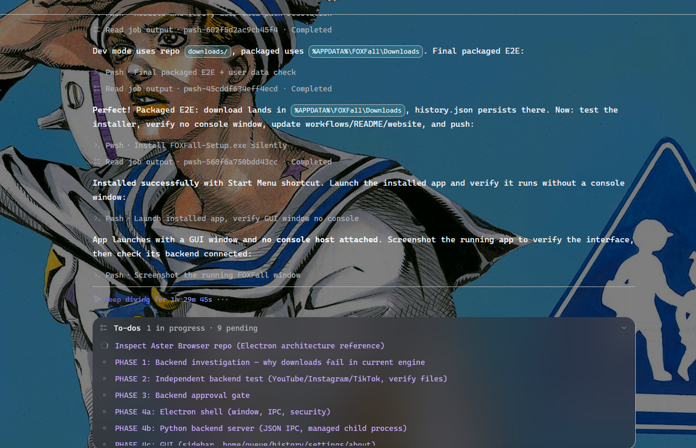

Multi-platform
One app for YouTube, Instagram Reels and TikTok — desktop and mobile URLs alike.
Download your favorite videos with FOXFall. One simple application for YouTube, Instagram, and TikTok.
Everything you need — nothing you don't.
One app for YouTube, Instagram Reels and TikTok — desktop and mobile URLs alike.
Watch pages, Shorts, youtu.be links, music — up to the best quality the source provides.
Public reels and video posts with tracking parameters stripped automatically.
vm./vt. short links resolved safely, canonical desktop URLs built for you.
Only the qualities the video actually offers — from 4K to 360p. No fake promises.
Save any video as MP3, powered by bundled FFmpeg. No manual installs.
A native window with sidebar navigation, download queue, history and settings. Nothing to install but FOXFall itself.
Queue several videos, cancel or retry any of them, see live speed and ETA in real time.
A native Windows desktop app with a polished graphical interface. Paste, choose, done — no terminal, no setup.
Three steps. That's it.
From your browser or the mobile app — any supported format.
FOXFall detects the platform and normalizes the link automatically.
Pick a quality and format, watch the progress, done.
Free, open source, no telemetry.

Prefer building from source? GitHub repository →
FOXFall is a free, open-source video downloader for Windows. The fox is our mascot; the fall is autumn — the season the interface is inspired by: warm orange, deep blacks and cream white.
It respects you: no telemetry, no ads, no accounts. Downloads run locally through the well-known yt-dlp engine, and the app never bypasses paywalls, DRM or platform restrictions. Private content stays private.
Built with Python. Licensed MIT. Contributions welcome on GitHub.